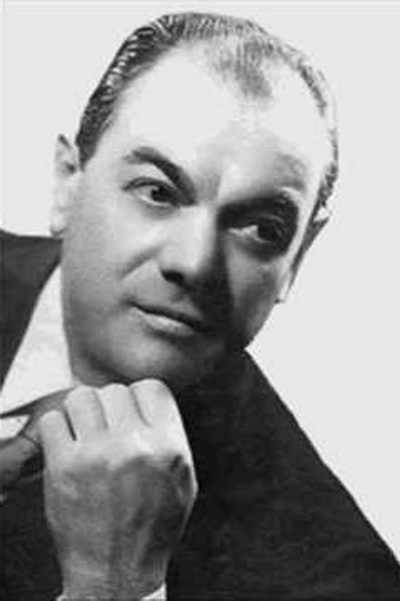

Reggaetón
El reggaetón es un género musical que fusiona ritmos caribeños como el reggae y el dancehall con influencias del hip-hop, la música electrónica y el rap. Nació en Puerto Rico en los años 90 y rápidamente se expandió por América Latina y el resto del mundo. Su estilo se caracteriza por un ritmo pegajoso, letras directas y a menudo sensuales, que abordan temas de amor, fiesta y vida nocturna. Artistas como Daddy Yankee, Don Omar, Wisin & Yandel y Bad Bunny han sido figuras clave en su popularización, llevando el reggaetón a las listas internacionales y a grandes escenarios. A pesar de las críticas por su contenido explícito o controvertido, el reggaetón sigue siendo uno de los géneros más influyentes en la música global, con una gran base de seguidores y una continua evolución que incorpora nuevos sonidos y colaboraciones con otros géneros como el pop, el trap y la música electrónica. Hoy en día, el reggaetón no solo domina las emisoras de radio y las plataformas de streaming, sino que también ha dejado una huella importante en la cultura pop, la moda y el baile.
Shakira

Shakira es una cantante, compositora, bailarina y multiinstrumentista colombiana. La artista compone canciones de pop latino, pop, rock and roll y reggaetón. "Waka Waka (Esto es África)" se convirtió en el tema mundialista más vendido de todos los tiempos. Además de su carrera musical, Shakira fue entrenadora en las temporadas 4 y 6 de "The Voice" en 2013 y 2014.
Cumbia

Se originó alrededor del siglo XVIII en Colombia y tiene algunas variaciones, como la cumbia mexicana, argentina y peruana. Combinando tambores africanos, melodías y danzas indígenas, la cumbia es considerada la reina de los ritmos afrocaribeños.
Banda Ráfaga

Es una banda argentina de cumbia que fue formada en el año 1994. Actualmente, este grupo musical volvió con su formación original. Su música, cuyas letras suelen tratar sobre el amor y el desamor, fue ideada por el tecladista argentino Marcos Bustamante, quien compuso íntegramente el primer disco de la banda. Al poco tiempo, invitó al destacado cantante argentino Antonio Ríos para financiar el primer trabajo discográfico de la futura banda.
Curiosidades
Nombre de la Banda: Se eligió el nombre "Ráfaga" porque es una palabra que evoca velocidad y energía, reflejando el estilo vibrante de cumbia que representa la banda. Influencia Rock: Antes de dedicarse a la cumbia, algunos integrantes de la banda tuvieron una influencia rock y pop, lo que terminó reflejándose en su estilo musical. Colaboraciones inusuales: A lo largo de los años, Ráfaga ha colaborado con artistas de otros géneros, incluidos el pop y el rock, ampliando su audiencia y experimentando con nuevos sonidos.
Tango

El tango es un baile/ritmo originario del siglo XIX, proveniente de Buenos Aires, Argentina, y también de Montevideo, Uruguay. La danza es realizada por hombres y mujeres, y generalmente tiene una gran carga dramática y una coreografía compleja. Los instrumentos utilizados incluyen guitarra, flauta, violín y también el bandoneón (la izquierda).
Francisco Canaro
Nacido en 1888 en la ciudad de San José de Mayo, Uruguay, Francisco Canaro fue un violinista uruguayo-argentino, quien también fue director de una orquesta de tango. Luchó por los derechos de los compositores en 1918 y ayudó a crear la Sociedad Argentina de Autores y Compositores de Música. Se estima que el número de Las grabaciones oscilan entre 3500 y 7000.